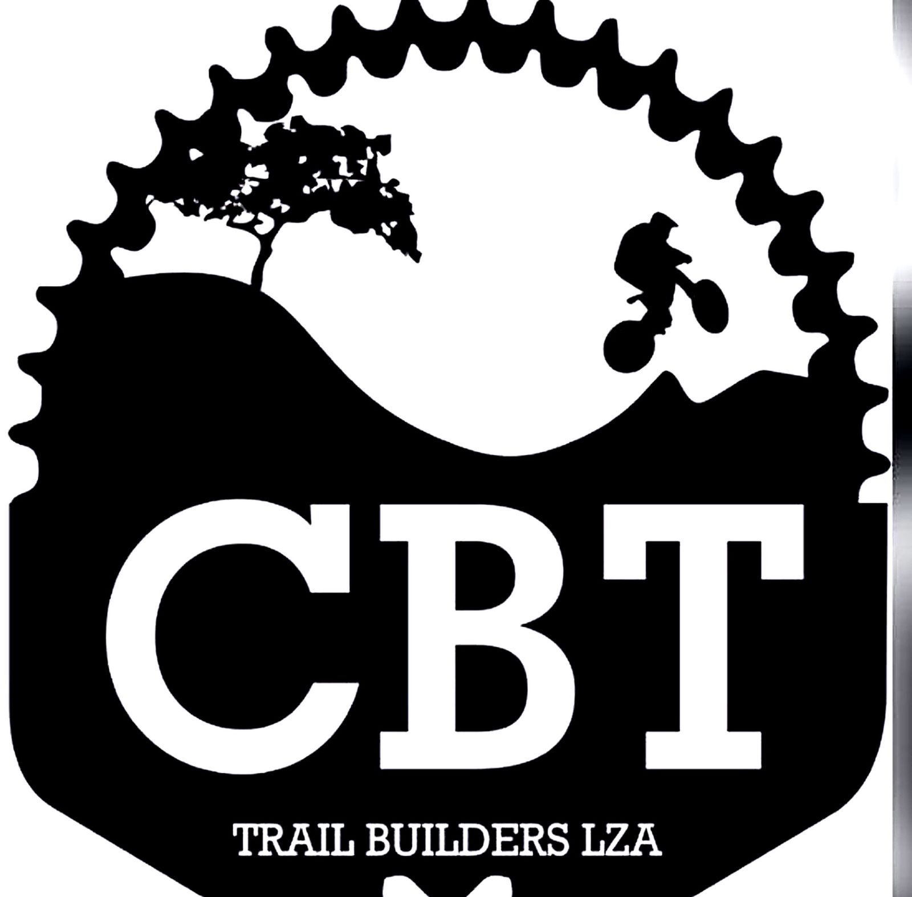

Cerrado Bike Trilhas
Luziânia • GO
Início
Sobre
Localização
Doações
Como Ajudar
Transparência
Contato
Transparência
Uso das doações
Manutenção de trilhas: R$ 900
Equipamentos: R$ 600
Sinalização: R$ 350